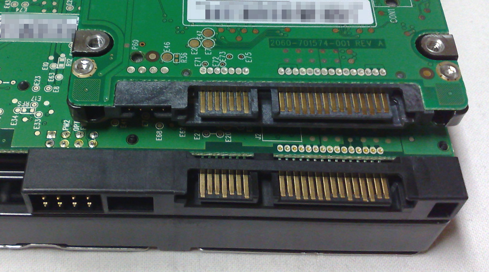
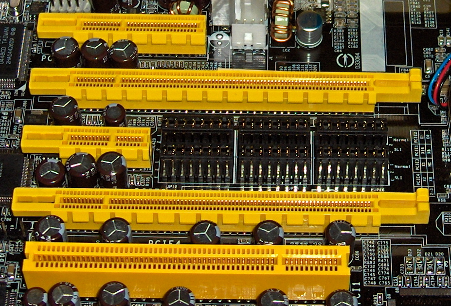
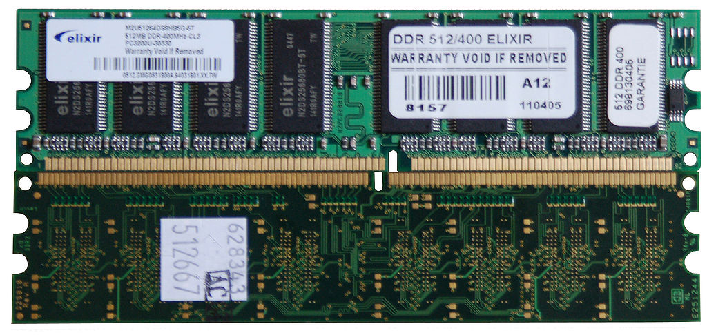
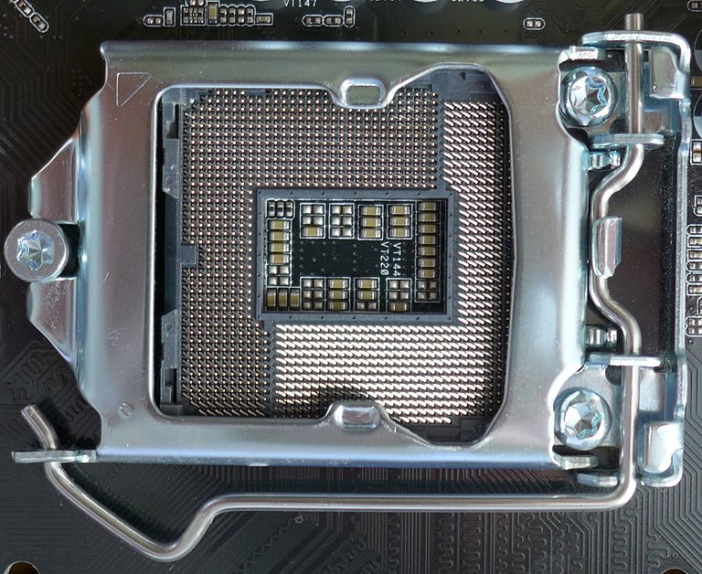
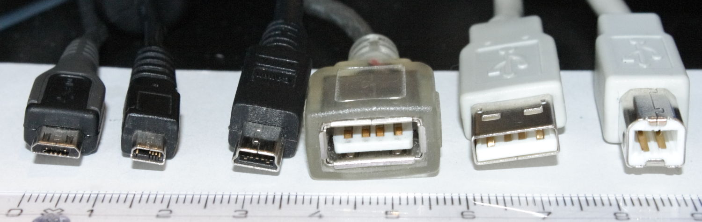
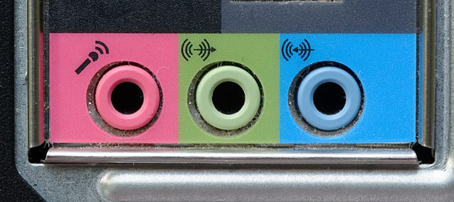
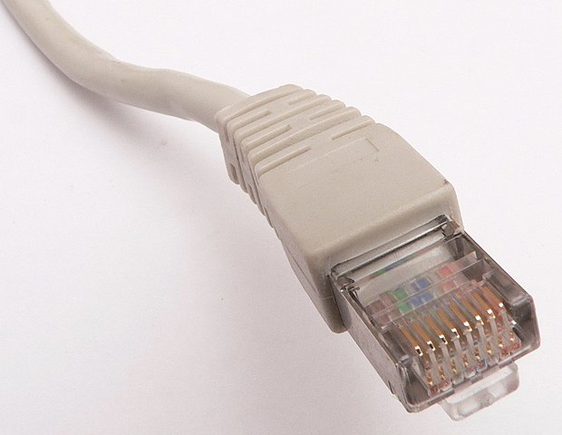

Communications¶
Computer communications allow the movement of data between different devices and computer components. They are fundamental elements found at all levels of computing, from the internal communication lines of a microprocessor to the communication lines of the Internet worldwide.
Index of contents:
Classification¶
- Internal connections
- Backplane buses
- SATA
- PCI Express
- RAM memory socket
- CPU socket
- External connections
- USB
- Analog audio connectors
- eSATA
- PS/2
- RS232
- Video connections
- VGA
- DVI
- HDMI
- Local network connections
- Ethernet
- Wireless networks
- Bluetooth
- Wifi
Male and female connectors¶
Connectors are used to electrically connect cables to computers and other peripherals.
Normally, cables tend to have protruding connection pins (male type connectors) and computers and other electronic equipment have holes (female type connectors) where the cables are connected. male connection pins.
The reason for this choice is that the male pins of the cables can break or bend more easily than the female holes of the equipment. If the pins of a cable are damaged, it can be replaced at a reduced cost, whereas if the connector of a computer or peripheral is damaged, it would be much more expensive to replace.
Other male and female connectors, such as USB connectors, do not have connection pins, but contact surfaces and are much more robust than connectors with pins. But the choice of a male plug for the cable and a female plug for the equipment is usually maintained.
Gender of connectors at English Wikipedia.
Internal connections¶
- Backplane buses
They are the tracks on the printed circuit that carry data between the CPU and the rest of the devices connected to the motherboard.
It has many more data lines than any other communication cable and is by far the fastest transmission medium. The distances covered by the data lines are very short, just a few centimeters.
- SATA
The serial ATA bus connects the computer's storage units (HDD, SSD, optical disks) with the processor. The SATA bus has been on the market since 2003 and version 3.0 is currently in operation.
The connection cable from the motherboard to the storage drive can be up to 1 meter in length, although most manufactured cables are shorter. This is so because SATA is a standard designed to connect devices inside the computer case or case.
Version Year Speed SATA 1.0 2003 150 megabyte/s SATA 2.0 2004 300 megabyte/s SATA 3.0 2008 600 megabyte/s SATA data and power connectors of two hard drives.¶
Dsimic, CC BY-SA 3.0, via Wikimedia Commons.- PCI Express
PCI Express abbreviated PCIe or PCI-e is a set of internal connectors on the motherboard, used to connect expansion cards to the computer. These expansion cards can be graphics cards, RAID controllers, Ethernet network cards, sound cards, etc.
There are 4 connector sizes depending on the number of communication channels they contain.
Version Pins Size PCI-E x1 18 25mm PCI-E x4 32 39mm PCI-E x8 49 56mm PCI-E x16 82 89mm PCI Express x4, x16, x1, x16 connectors.¶
The bottom connector is PCI x32 (not Express, already obsolete).
Jona, CC BY-SA 3.0, via Wikimedia Commons.
The transfer speed depends on the version of PCI Express (increases every few years) and the number of communication channels of the connector.
Version Year Speed x1 16x speed PCI-E 1.0 2003 0.25GB/s 4.0GB/s PCI-E 2.0 2007 0.50 GB/s 8.0GB/s PCI-E 3.0 2010 1.0GB/s 16GB/s PCI-E 4.0 2017 2.0GB/s 32GB/s PCI-E 5.0 2019 3.9GB/s 63GB/s PCI-E 6.0 2021 7.9 GB/s 126GB/s The most popular application for PCI-E x16 connectors is connecting graphics cards to motherboards.
There is a connector called M.2 that is based on the PCI Express 3.0 x4 connector. It is used to connect very fast and compact SSD drives at speeds much higher than what the traditional SATA III connector allows.
Older personal computers did not incorporate many of the current functions (sound input and output, Ethernet communications, USB buses, etc.) on the motherboard and these functions had to be provided by specialized expansion cards, connected to expansion connectors. similar to the current PCI.
- DIMM type RAM memory socket
DIMM stands for Dual In-line Memory Module (two-line memory module) so called because the module connectors have two sides of pins Connection.
These sockets are used to connect RAM modules to the motherboard.
Depending on the type of computer (box type or laptop) and depending on the version of the RAM, these modules may have different number of contacts, different size and different position of the central slot to avoid the mistaken connection of incompatible modules.
DDR DIMM memory module and DDR2 module with different number of pins and different security slots.¶
Wagner51, CC BY-SA 3.0 , via Wikimedia Commons.- CPU socket
The CPU socket allows you to connect the microprocessor or CPU to the motherboard. In high-performance motherboards there may be more than one socket to be able to connect several microprocessors on the same motherboard.
Each CPU socket is used to connect microprocessors of the same family. Sockets change in shape and number of connections between families of microprocessors and between CPU manufacturers (Intel or AMD).
The CPU socket makes it possible to increase the power of the computer by changing the old microprocessor for a more powerful one from a family that is compatible with that of the previous microprocessor. This operation is usually simple to perform and costs only a small fraction of what it would cost to buy a new computer.
These are some sockets for desktop computers:
Name Year Family LGA 1155 (H2) 2011 Intel Sandy Bridge and Ivy Bridge LGA 1150 (H3) 2013 Intel Haswell and Broadwell LGA 1151 (H4) 2015 Intel Skylake y KabyLake LGA 1200 2020 Intel comet lake Socket AM4 2016 AMD Zen+, Zen 2 and Zen 3 Socket AM5 2022 AMD Zen 4 Socket for LGA 1151 type CPU, also known as Socket H4.¶
Xaar, CC BY-SA 4.0 , via Wikimedia Commons.

External connections¶
- USB
The USB (Universal Serial Bus) is a standard for providing data and power connections to computers, peripherals, and electronic devices. It began to be used massively from 1998.
There are currently 4 major USB standards with the characteristics that appear in the following table.
Standard Year Speed Current Others USB 1.1 1998 1 Mbyte/s 0.5A A and B connectors only. USB 2.0 2000 50 Mbyte/s 0.5A Also connectors
mini and micro.
USB 3.0 2008 600 Mbyte/s 0.9A - 3.0A Color blue USB 4.0 2019 4000 Mbyte/s 3.0A C connector only USB connectors. Micro type B, UC-E6, mini type B, female type A, male type A, male type B.¶
Viljo Viitanen, via Wikimedia Commons.The USB C connector is the most modern and the only one compatible with the USB 4 specification. In addition to allowing high-speed communications, with technology Power Delivery can power devices with a power of up to 100 watts, much higher than the power allowed by previous connectors.
- Analog audio connectors
The analog audio connectors are used to connect microphones, headphones and other analog audio systems to electronic devices.
There are connectors of different sizes, but the most popular is the 3.5mm connector used in most computers and smartphones.
Color codes for 3.5mm audio jacks on personal computers.
Color Function Green Audio output. Front channels. Blue Audio input. line level. Pink red Audio input. Microphone level. Black Audio output. rear channels. Grey Audio output. Side channels. Orange Audio output. Center channel and Subwoofer. 3.5mm analog audio connectors from a personal computer.¶
Jud McCranie, CC BY-SA 4.0, via Wikimedia Commons.- PS/2
The PS/2 connector takes its name from IBM Personal System/2 computers, created by IBM in 1987. This connector is used to connect keyboards and mice.
These connectors are currently obsolete, but are still being used on some motherboards for compatibility with older keyboards and mice. Some modern motherboards have a single connector, half purple and half green, which is used to connect both older keyboards and mice.
- RS-232
The communications standard RS-232 is an interface for data exchange via low-speed serial.
This standard was widely used years ago, until it was replaced by USB starting in 1998. It is now obsolete and is not usually incorporated into motherboards, but it can be added via a PCI expansion card or via a converter cable. from USB to RS-232.
There is still old equipment in factories, laboratories and companies that uses the RS-232 standard and it is necessary to be able to communicate with it.
This connector should not be confused with the VGA video connector, very similar, but with three rows of connection pins.

Video connectors¶
- VGA
The VGA (Video Graphics Array) connector is a standard for communicating the computer's graphics card with the video monitor or projector. This connection uses analog signals, with worse quality and less resolution capacity than current digital connectors (DVI and HDMI).
Despite being a standard designed for old CRT-type screens and offering worse performance on LCD digital screens, it is still used in current computers and monitors to keep compatibility with old devices.
- DVI
The DVI (Digital Visual Interface) connector is a standard for communicating video that uses both analog and digital signals.
The DVI connector allows the cable to be screwed to the computer case making it more robust than the HDMI connector.

Male DVI connector.¶
Greg Ebdon, CC BY-SA 3.0 <https://creativecommons.org/licenses/by-sa/3.0/> __, via Wikimedia Commons.- HDMI
The HDMI (High-Definition Multimedia Interface) connector is a standard that allows transferring both video and audio with signals digital.
This is one of the most widely used standards in all types of new multimedia equipment, not just computer equipment.
The connector is more fragile than other video connectors and is more likely to be inadvertently disconnected.

{kind=link}
{kind=link}
{kind=link}
{kind=link}
{kind=link}
{kind=link}
{kind=link}
{kind=link}
{kind=link}
{kind=link}
{kind=link}
Comparison between video connections
Standard Signal Connector Content VGA Analog Robust Video DVI Analog
and digital
Robust Video HDMI Digital Weak Audio and
Video
Network connectors¶
- Ethernet
The local network standard Ethernet is used to connect computers in local area networks, which usually connect computers from the same building or even from different ones together. buildings that are nearby.
Copper cables usually support a maximum distance of 100 meters, but this distance can be extended using intermediate switches that act as repeaters or using fiber optic cables.
Ethernet UTP cable with RJ-45 male connector.¶
David Monniaux, CC BY-SA 3.0 <https://creativecommons.org/licenses/by-sa/3.0/> __, via Wikimedia Commons.The cable used for the connections is usually UTP (Unshielded Twisted Pair) copper cable. This is a type of cable with worse performance than fiber optic cables, but it is cheaper to install and easier to handle, which is why it is used mostly for close connections, tens of meters long.

UTP Ethernet cable, with four pairs of unshielded twisted copper wire.¶
Baran Ivo, via Wikimedia Commons.Ethernet communications standards most used with copper cable.
Standard Year Cables Speed 10Base T 1990 UTP Category 3 10 Mbit/s 100Base T2 1998 UTP Category 5 100Mbit/s 1000BaseT 1999 UTP Category 5e 1000Mbit/s 10GBaseT 2006 UTP Category 6A 10,000 Mbit/s - Fiber optic communication
The fiber optic communication standards range from domestic links for digital audio, through high-speed links and long distances for Ethernet, up to intercontinental links for Internet communications.
The technology best known by most people is FTTH or fiber to the home, which is installed by telephone companies to provide Internet access in homes .
The advantages of fiber optics over copper cables are that they can carry information much faster. In addition, fiber optic cables can reach much greater distances without signal loss.
The disadvantages of fiber optics consist of its higher cost and its greater difficulty of installation.
{kind=link}
{kind=link}
Wireless networks¶
- Wifi
The wifi standard is a technology that allows devices to be connected to each other or to the Internet wirelessly. It is the wireless version of the Ethernet standard, for local networks.
The great advantage it has is that it does not need cables to make the connections.
The main disadvantage of Wi-Fi networks is based on the fact that they share the transmission medium, the air, with all the other equipment. This makes it congested when there are many computers running close to each other and may have security breaches (theft or espionage of Wi-Fi signals).
There are many different standards within Wi-Fi. The most modern, such as 802.11ax or Wi-Fi 6 of 2020, can transmit at speeds greater than 60 Mbyte/s up to distances 100 meters or more, depending on the obstacles the signal encounters. The greater the distance or obstacles, the lower the transmission speed.
- Bluetooth
The Bluetooth wireless communications standard serves to facilitate communications between mobile devices, without using cables. Bluetooth is capable of connecting your smartphone to a wireless headset or car hands-free system.
This standard is also used to perform file transfers between devices, for example, to print a document on a printer from a laptop, without using cables.
This standard has a more limited range than the Wi-Fi connection (about 10 meters) and is less versatile. As an advantage, it has a much lower consumption than the Wi-Fi connection.
{kind=link}
{kind=link}